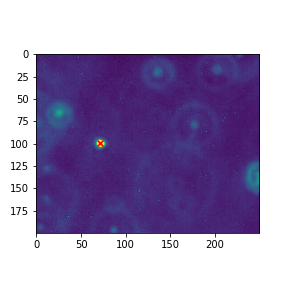
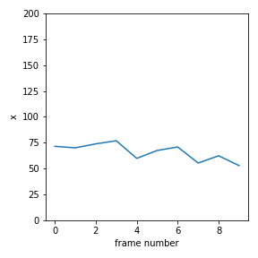
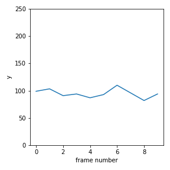
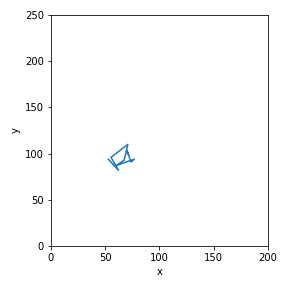

Tutorial 7¶
Question 1¶
The folder particle contains a sequence of images of a bead undergoing brownian motion. Your goal is to track the movement of the bead by identifying its position in each of the frames.
Download particle.zip then upload it to Cocalc. Unzip the folder by clicking the file then the ‘Extract Files’ button in Cocalc.
Part 1¶
Follow the steps in the notes to determine the (x, y) co-ordinates of the bead in the image particle/frame0.png.
Use
np.imreadto convert the image file to a numpy array.Convert the image to greyscale by summing along the final axis.
Threshold the array. Determine a value for the threshold which results in just a single ‘blob’.
Determine the location using the function
sn.center_of_mass(you do not need to determine the largest blob since there should be only one!)Use
plt.imshowandplt.scatterto mark the location of the bead on the image, like this:

Part 2¶
Use your code from Question 1 to write a Python function get_particle_location(filename) which returns the (x, y) co-ordinates of the bead in the image file filename.
loc = get_particle_location("particle/frame0.png")
print(loc)
(98.92857142857143, 71.60714285714286)
Part 3¶
By calling your function get_particle_location on each of the files, construct a 2 by 10 numpy array containing the co-ordinates of the bead in each of the 10 frames.
Make a plot of x vs time, y vs time and y vs x. Make sure you scale the axes so that they correspond to the dimensions of the image, as below.
  
Question 2¶
Repeat the above question for the noisy images in the folder particle_noisy.
For Part 1, you will have to choose a suitable threshold then pick the blob with the largest size, as in the notes.
For Part 3, can you find a value of the threshold that works for all of the images? If not, how could you solve this?